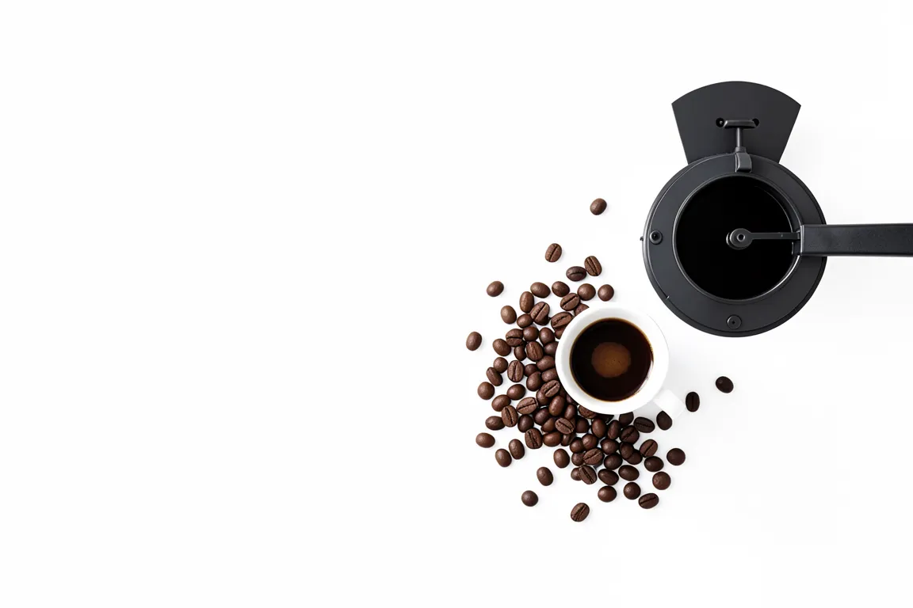

nett · 2012–now · også: Minimalt nett, Mindre er mer-UI, Stille nett
En side med én idé per skjerm: få elementer, mye rom, én skriftfamilie og ett aksent. Hver del må fortjene plassen sin; det som blir igjen er klart, rolig og raskt.

Kjerneidé
Fjern til bare behovet er igjen: rom og tilbakeholdenhet bærer budskapet.
Designprinsipper
Vis én idé, én handling og ett bilde, eller ingen, per skjerm.
Bruk 60 % til 75 % av flaten som tomt rom; avstandsskalaen er 8, 16, 32, 64 og 128px.
Bruk én skriftfamilie i 2 vekter og en skala på 14, 16, 24 og 64px.
Sett siden i hvitt eller off-white (#FAFAF8) med tekst i nesten svart (#161616) og ett aksent bare til hovedhandlingen.
Bruk ingen kant, skygge eller gradient; skill deler med rom eller en hårstrek på 1px ved 12 % dekning.
Hold navigasjonen til 5 elementer eller færre og vis ikke noe ikon uten klar betydning.
Animer bare tilstandsendringer, på 150ms til 250ms.